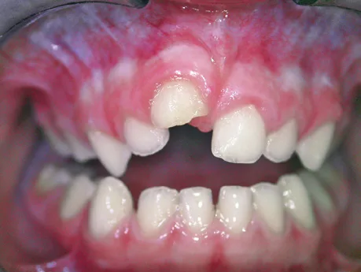

نسخه استخراجشده؛ ترجمه یا تأیید علمی انجام نشده است. وضعیت: captured
کانکاشن و سابلوکسیشن — هیچ مداخلهی فعالی لازم نیست. رژیم نرم برای یک تا دو هفته، بهداشت ملایم با گاز آغشته به کلرهگزیدین، و پیگیری.
اکستروژن — تصمیم به میزان بیرونزدگی و لقی بستگی دارد:
بیرونزدگی کم و دندان نسبتاً پایدار ← جاگذاری ملایم یا حتی مشاهده، چون در دندان شیری اغلب خودبهخود جا میافتد.
بیرونزدگی زیاد یا لقی شدید ← کشیدن؛ دندانی که پایدار نمیشود، هم خطر بلع دارد و هم برای کودک آزاردهنده است.
لوکسیشن لترال: اگر تداخل اکلوزالی نداشته باشد، مشاهده کن — دندان اغلب طی چند هفته تا چند ماه خودبهخود جا میافتد. در جابهجایی شدید، هر دو راه با بیحسی است: کشیدن اگر خطر بلع یا آسپیراسیون دندان هست؛ وگرنه ریپوزیشن ملایم، و اگر ناپایدار ماند، اسپلینت انعطافپذیر چهار هفتهای.
اینتروژن: دندان اجازه میگیرد خودبهخود دوباره رویش یابد — صرفنظر از جهت جابهجایی. رویش مجدد معمولاً طی چند هفته شروع میشود و بیشتر این دندانها تا حدود شش ماه، و گاهی تا یک سال، برمیگردند.
جهت را همچنان تشخیص بده: نوک به سمت لبیال ← نوک در رادیوگرافی دیده میشود و تصویر دندان از قرینهاش کوتاهتر است؛ نوک به سمت جوانه ← نوک دیده نمیشود و تصویر بلندتر است. جهت، خطر برای جوانه را نشان میدهد و باید به والدین گفته شود — ولی درمان را عوض نمیکند.
کشیدن فوری، حتی وقتی نوک به سمت جوانه رفته، دیگر توصیه نمیشود: دندان اینتروده خودش دوباره رویش مییابد، خود کشیدن میتواند به جوانه آسیب بزند، و شاهدی نیست که کشیدن فوری آسیب جوانه را کم کند. بهجایش ارجاع سریع (ظرف چند روز) به تیمی باتجربه در ترومای کودکان، و پیگیری بالینی در یک هفته، شش تا هشت هفته، شش ماه و یک سال؛ در اینتروژن شدید، پیگیری تا ششسالگی برای رویش دندان دائمی.
هشدار پیگیری: دندان اینتروده ممکن است انکیلوزه شود و در اینفراپوزیشن باقی بماند — یعنی از سطح اکلوزال عقب بیفتد.
